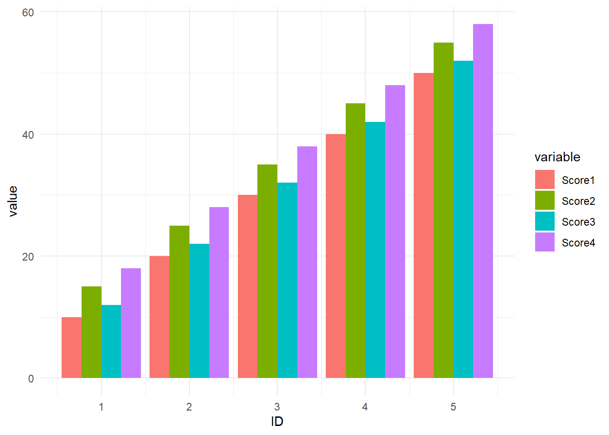

Mastering Data Manipulation in R: Comprehensive Guide to Stacking Data Frame Columns
code
rtip
operations
Author
Steven P. Sanderson II, MPH
Published
September 30, 2024
Keywords
Programming, Stacking data frame columns in R, Base R column manipulation, Data reshaping in R, stack() function R, tidyr::pivot_longer example, data.table column stacking, Beginner R data manipulation, R data frame tutorial, Reshape data with R, R programming for beginners
Introduction
Data manipulation is a crucial skill for any data analyst or scientist, and R provides a powerful set of tools for this purpose. One common task is stacking columns in a data frame, which can help in reshaping data for analysis or visualization. This guide will walk you through the process of stacking data frame columns in base R, providing you with the knowledge to handle your data efficiently.
Understanding Data Frames in R
Data frames are a fundamental data structure in R, used to store tabular data. They are similar to tables in a database or spreadsheets, with rows representing observations and columns representing variables. Understanding how to manipulate data frames is essential for effective data analysis.
What Does Stacking Columns Mean?
Stacking columns involves combining multiple columns into a single column, often with an additional column indicating the original column names. This operation is useful when you need to transform wide data into a long format, making it easier to analyze or visualize.
Methods to Stack Data Frame Columns in Base R
Using the stack() Function
The stack() function in base R is a straightforward way to stack columns. It takes a data frame and returns a new data frame with stacked columns.
The pivot_longer() function from the tidyr package offers a modern approach to stacking columns. This function is part of the tidyverse collection of packages.
# Load tidyrlibrary(tidyr)# Use pivot_longer to stack columnstidy_data <-pivot_longer( data, cols =starts_with("Score"), names_to ="Score_Type", values_to ="Score_Value" )print(tidy_data)
When stacking columns, ensure that all columns are of compatible data types. If you encounter issues, consider converting data types or handling missing values appropriately.
Advanced Techniques
For more complex data reshaping, consider using the reshape2 package, which offers the melt() function for stacking columns.
Once your data is stacked, you can create visualizations using ggplot2.
# Plot stacked datalibrary(ggplot2)ggplot(melted_data, aes(x = ID, y = value, fill = variable)) +geom_bar(stat ="identity", position ="dodge") +theme_minimal()

FAQs
What is the difference between stacking and unstacking?
Stacking combines columns into one, while unstacking separates them.
How to handle large datasets?
Consider using data.table for efficient data manipulation.
What are the alternatives to stacking in base R?
Use tidyverse functions like pivot_longer() for more flexibility.
Conclusion
Stacking data frame columns in R is a valuable skill for data manipulation. By mastering these techniques, you can transform your data into the desired format for analysis or visualization. Practice with real datasets to enhance your understanding and efficiency.
Your Turn!
Now it’s your turn to practice stacking data frame columns in R. Try using different datasets and explore various functions to gain hands-on experience. Feel free to experiment with different packages and techniques to find the best approach for your data.
I hope that you find this guide provides a comprehensive overview of stacking data frame columns in base R, tidyverse, and data.table, especially if you are a beginner R programmer. By following these steps, you will be able to effectively manipulate and analyze your data.